Este juego nos ayudara a tener un primer contacto con Stencyl.
Lo primero que haremos será instalar el kit que ya viene con todo lo necesario para empezar a diseñar nuestro
juego.
Para poder instalarlo y tener una visión general de la aplicación, seguimos la siguiente
guía.
Ahora iremos creando un juego base para ir cogiendo soltura con la herramienta y con la forma de programar.
Para descargar los objetos necesarios para el juego, lo haremos desde este link. Es un archivo comprimido con 3 imágenes y 1 sonido. Lo descargaremos y lo descomprimimos en el directorio del alumno.
El juego consiste en que Noni se pueda mover con las flechas derecha, izquierda y arriba (para saltar), y
podrá matar al Clown saltando sobre el o disparándolo.
Haremos diferentes efectos sobre Noni mediante teclas.
Crearemos una bala que disparará Noni y servirá para eliminar los Clowns.
Los Clown se moverán de izquierda a derecha sin salirse de la pantalla.
Noni tendrá 3 vidas que se irán descontando cada vez que el Clown toque a Noni por los lados.
Iremos contabilizando los Clown que elimina Noni.
Pondremos una pantalla de fin cuando nos quedemos sin vidas (You Lose) y cuando eliminemos a todos los Clowns
(Game Over).
Lo primero que haremos será crear un juego a partir del "Crash Course Kit". Para ello, nos vamos a "Juegos" en "Mis Proyectos", y le damos a "Crear un juego".
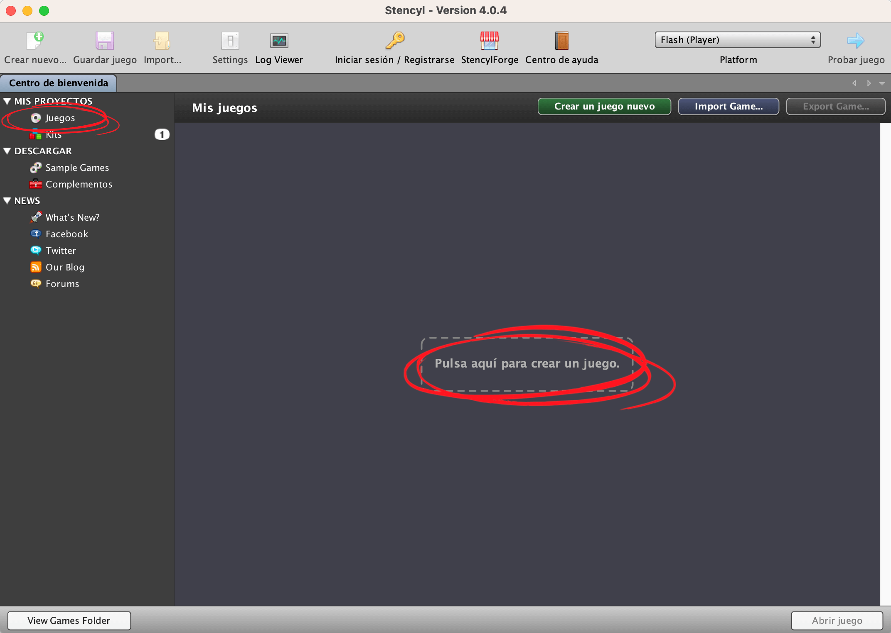
El tipo de juego que vamos a crear es basado en el "Crash Course Kit". Lo seleccionamos y le damos a "Siguiente".
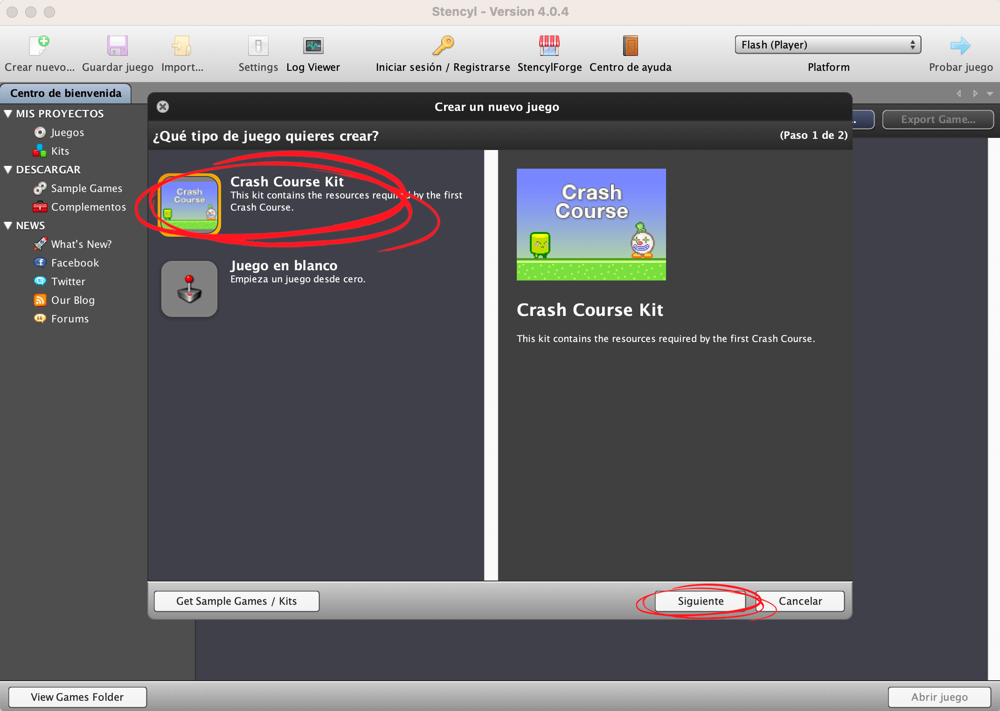
Finalmente, le ponemos un nombre ("Crash Course" en nuestro caso) y le damos a crear. El tamaño de la pantalla y el resto de entidades, sonidos, baldosas y demás características las heredará del Kit.

Ya tenemos nuestra base del juego creada.
Vamos a empezar por crear el escenario principal donde se desarrollará nuestro juego.
En la "Central del juego", marcamos "Escenas".
Como no tenemos ninguna creada todavía, pinchamos en el centro, en crear una.
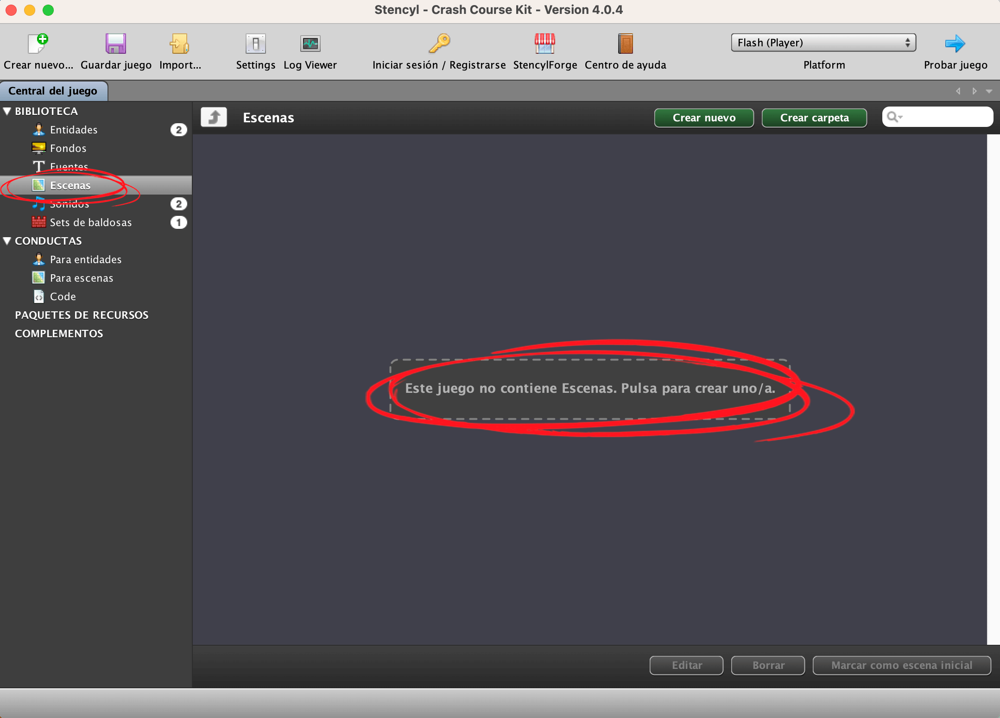
Nos aparece una ventana con las dimensiones de nuestro escenario ya definidas. Lo dejamos así y le ponemos
nombre al nuevo escenario.
Podemos cambiar el color del escenario a "Color sólido", "Sin color" o "Gradiente vertical". En nuestro caso,
seleccionamos "Gradiente vertical" y seleccionamos dos colores.
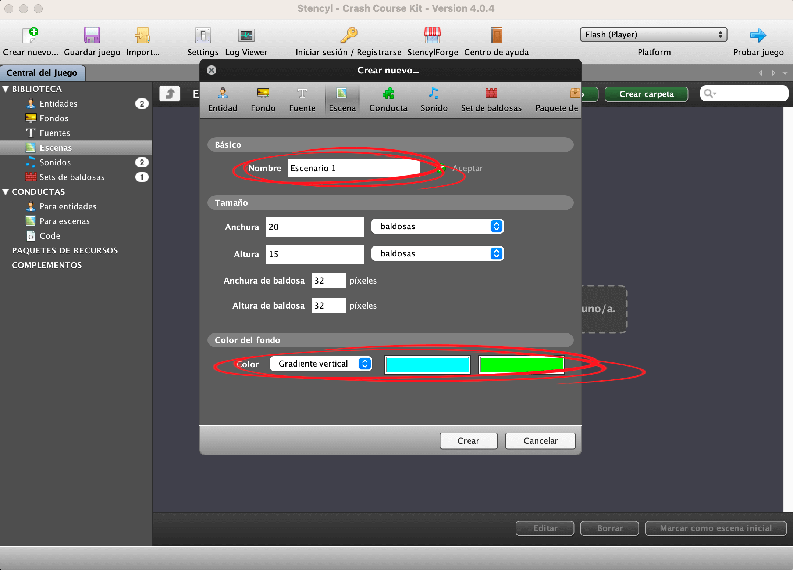
Ya tenemos el escenario creado con el gradiente de color y las dimensiones especificadas.
En la izquierda de la pantalla tenemos un menú con varias opciones. Las que más utilizaremos son:
- Una flecha que nos permitirá seleccionar las baldosas del escenario para poder moverla, borrarlas, etc.
- Un lápiz con el que podemos dibujar las baldosas del escenario con la baldosa que tengamos seleccionada
en la parte derecha.
- Una matriz para poder dibujar más rápido una zona más grande.
- Un cubo para rellenar todo el escenario que no tenga nada ya dibujado.
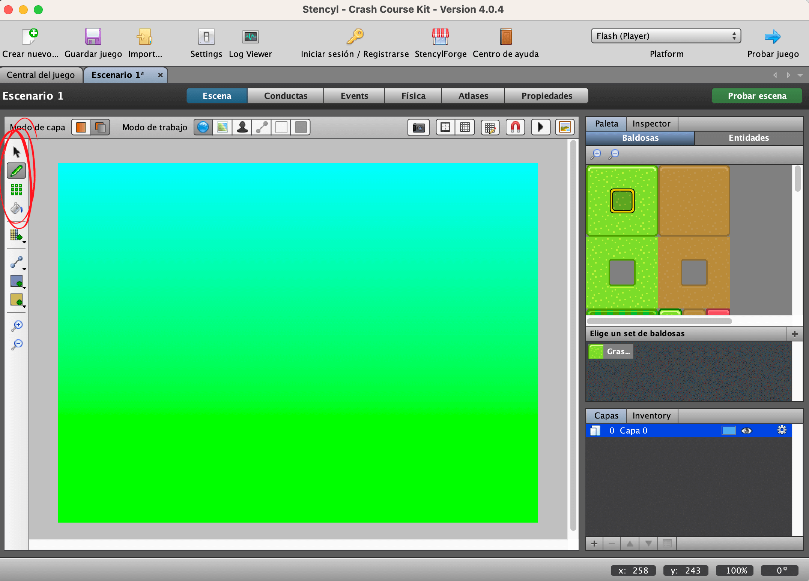
Seleccionamos el lápiz y en la parte derecha seleccionamos "Paleta" y debajo, "Baldosas".
Ahora ya podemos elegir la baldosa que queremos pintar. Para poner las baldosas, clicamos donde queramos
ponerla y mantenemos pulsado si queremos poner varias.
Vamos a dibujar dos filas de baldosas de tierra en la parte inferior y una fila de césped encima.
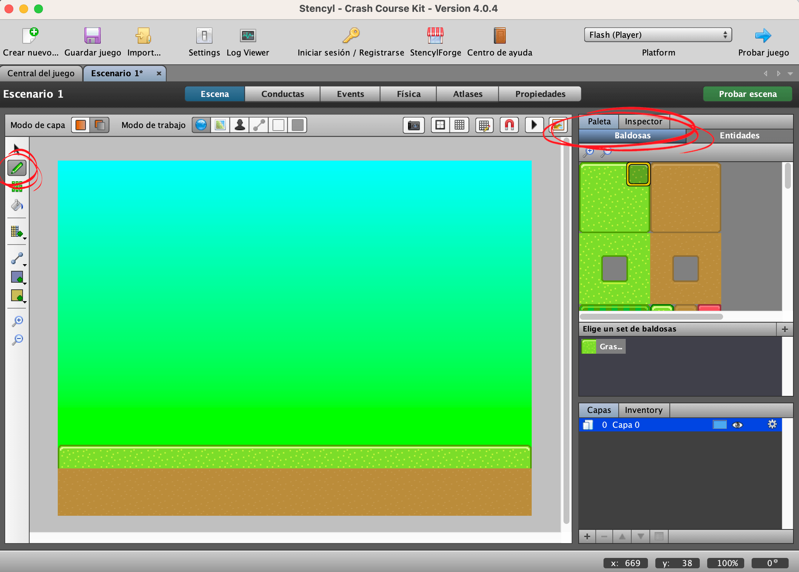
Ahora ya podemos poner a Noni y al Clown en el escenario. Para poder seleccionarlos, ahora marcamos
"Entidades" en la parte derecha y aparecen los dos personajes.
Seleccionamos a Noni y el Clown y los ponemos en el escenario sobre el césped. Del Clown ponemos tres
personajes.
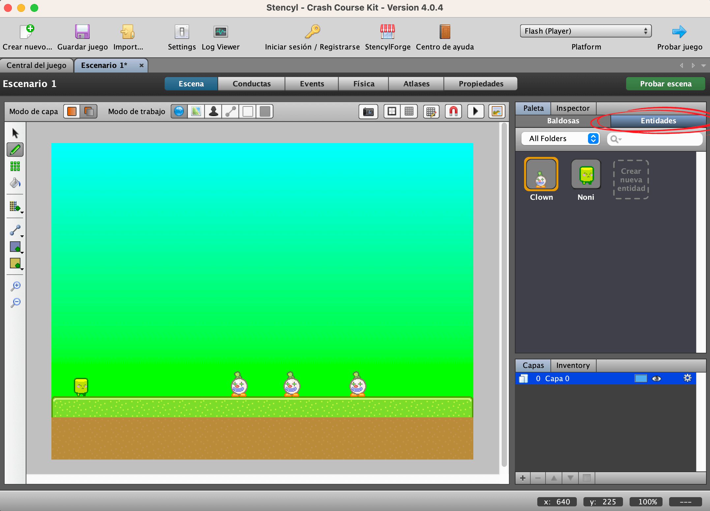
En la Escena podemos ver en la parte superior las siguientes secciones, además de los propios atributos de la escena:
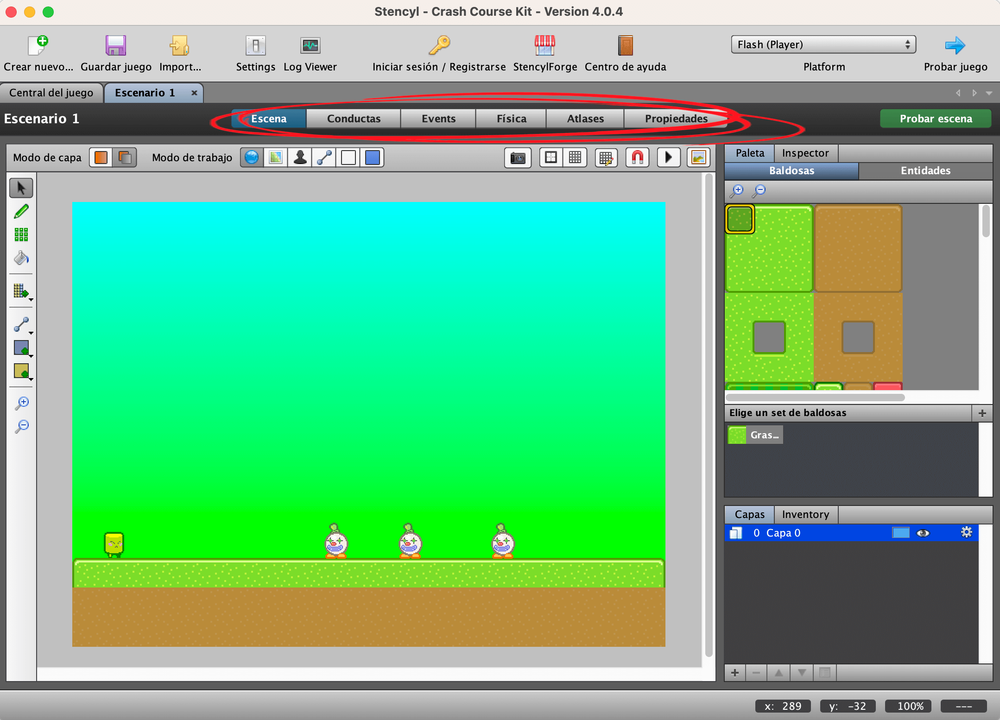
- Conductas: En esta parte podemos seleccionar los comportamientos que tengamos en el entorno de nuestro
juego. Estos comportamientos los crearemos en la pestaña de "Central de Juegos", en la opción de
CONDUCTAS.
- Events: Los Eventos son sucesos que ocurren en el juego y que se desencadenan por las acciones que
vamos realizando.
- Física: Podrá ser "Horizontal" o/y "Vertical" y podemos indicarle la dirección. En este caso, pondremos
"Vertical" hacia abajo. Podemos modificar el valor para que haga la gravedad más rápida ó más lenta.
Pondremos 45 pero podemos ajustarla según nos venga mejor.
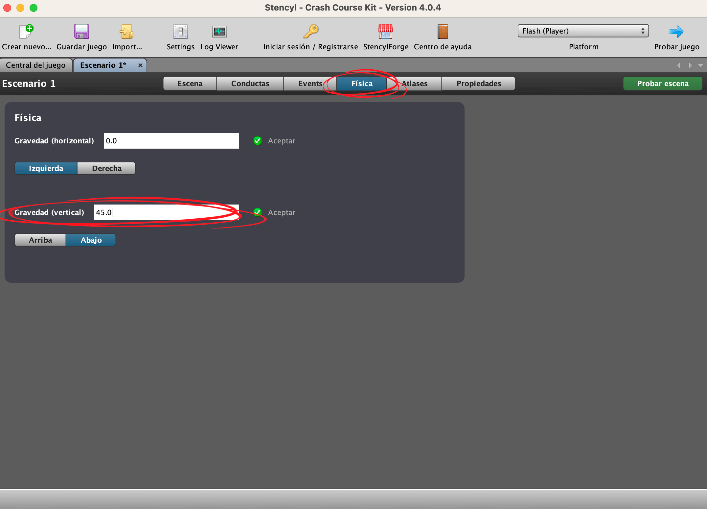
- Atlases: Permite en Stencyl agrupar recursos en categorías y vincular esas categorías a escenas
específicas para minimizar el uso de la memoria.
- Propiedades: Nos permitirá cambiar las propiedades de la escena que definimos a la hora de crearla.
Otra información importante de la escena es la que aparece en la parte inferior derecha, las "Capas" y el
"Inventory" (inventario).
En "Capas" tendremos todas las capas que hayamos creado, incluyendo los fondos. Es importante que la capa 0,
que es sobre la que trabajamos, esté en la primera posición y seleccionada en azul para que podamos incluir en
ella los personajes que necesitamos en la escena.

En el "Inventory" aparecerán todas las entidades que tengamos en el escenario.
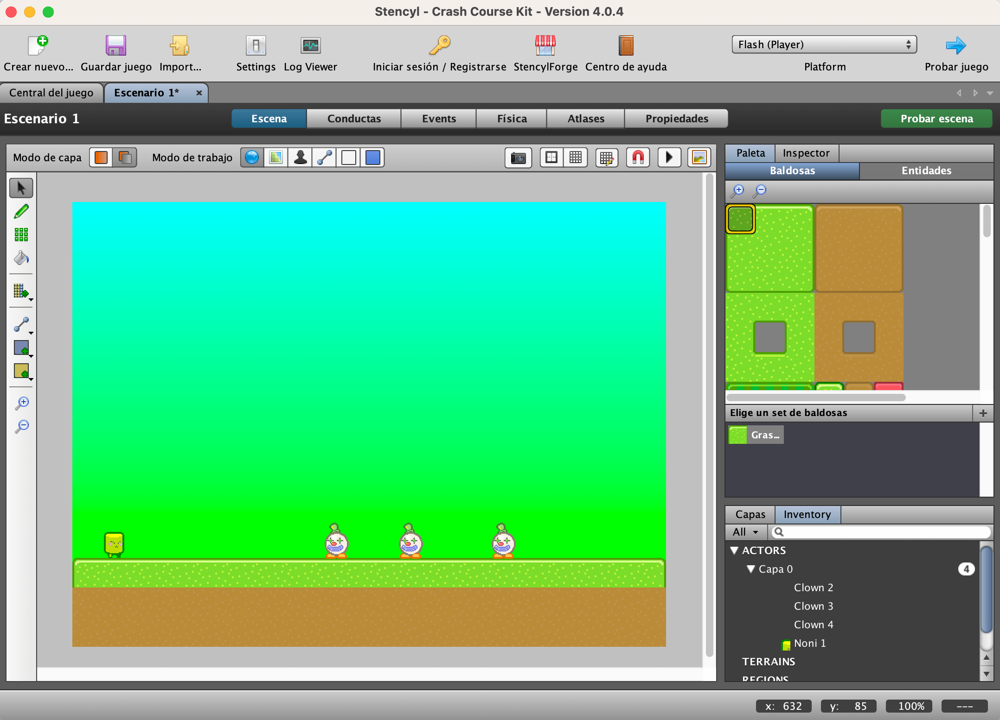
Noni será nuestro personaje principal. Comenzaremos a programar a Noni para que se mueva a derecha e izquierda
con las flechas y salte con la flecha arriba.
Nos vamos a la "Central del juego" y seleccionamos a Noni en "entidades".
Pulsamos la opción de "Events", que es donde vamos a programar toda la lógica del movimiento.
Usaremos un evento "When Updating" para programar las teclas. Lo añadiremos seleccionando "+ Add Event" y
añadiremos el evento, que estará en "Basics"
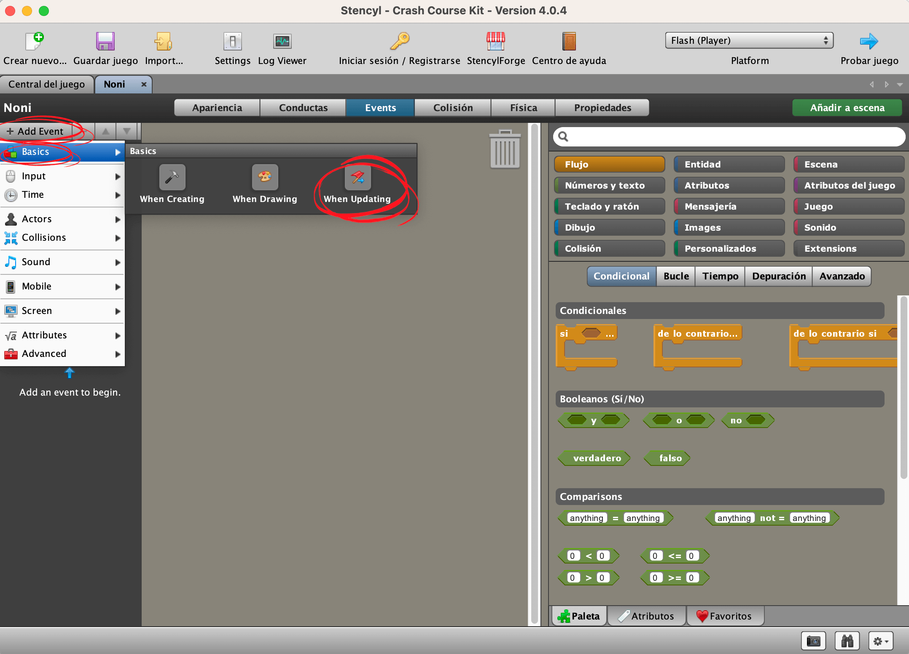
Para borrar un evento, al lado de "+ Add Event" estará el símbolo "-". Lo pulsaremos y lo eliminará después de
preguntar si realmente queremos hacerlo.
También podemos desactivar un evento momentáneamente sin tener que borrarlo. Para ello, quitaremos el check
que aparece a su derecha y el juego se ejecutará normalmente pero no usará ese evento.
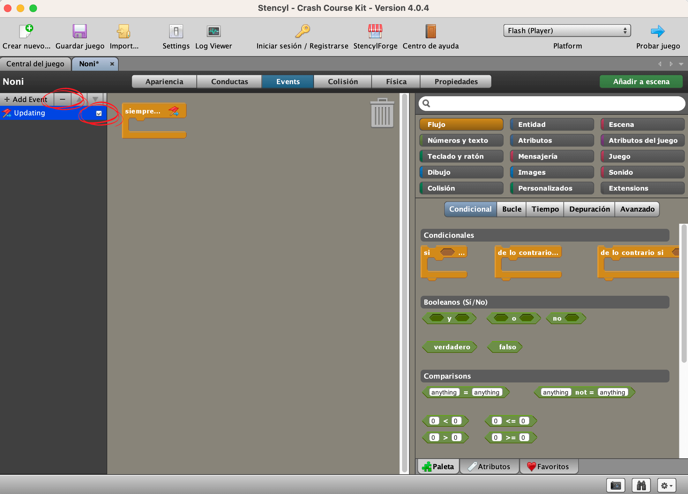
Una vez que tenemos añadido el evento "When Updating" tendremos que añadir el código.
En la parte de la derecha aparecerán agrupados los bloques de programación en 15 grandes grupos.
Cada grupo está agrupado a la vez en otros subgrupos más pequeños y más orientados a lo que queremos hacer.
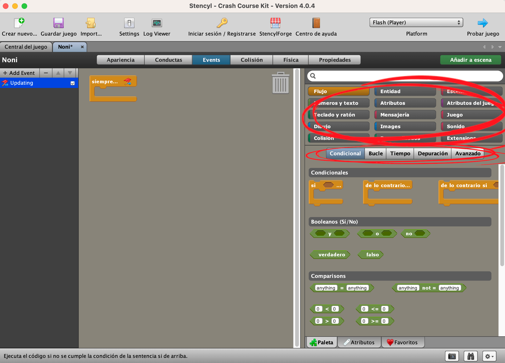
Tendremos que preguntar si hemos pulsado una tecla determinada. Para ello podemos seleccionar el grupo de
"Flujo" y el subgrupo "Condicional", y cogeremos el "Si...".
Para poner si hemos pulsado una determinada tecla, seleccionaremos el grupo "Teclado y ratón" y el subgrupo
"Keyboard & Mouse", y cogeremos si está pulsada una tecla.
Para poder añadir la tecla a la instrucción de si se ha pulsado una tecla, esta debe estar previamente
definida. En nuestro caso, hay una serie de teclas definidas por defecto que podemos ver o añadir nuevas en
la opción "Settings" del menú superior y la opción "Controles" de la parte derecha.
Aquí podremos añadir o modificar los controles de nuestro juego. Para añadir uno nuevo sería suficiente con
darle un nombre a ese control y seleccionar una tecla.
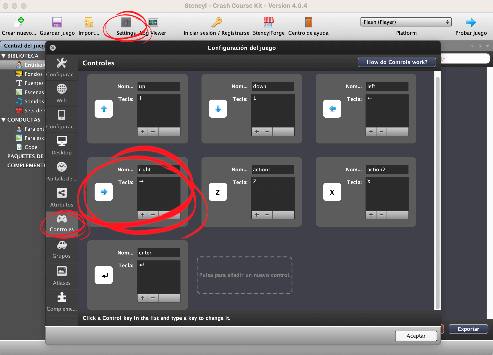
Vamos arrastrando los comandos a la parte izquierda y vamos formando nuestro código.
Para el movimiento, seleccionamos el grupo "Entidad" y el subgrupo "Movimiento", y usaremos "set x-speed"
para poder movernos en horizontal y le daremos el valor 10.
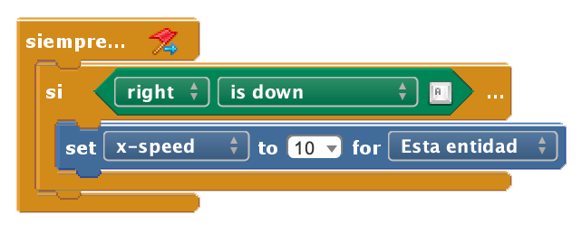
Si probamos el juego, veremos que al pulsar la flecha se mueve, pero cuando dejamos de pulsarla, se desliza hasta pararse. Para que se pare sin deslizarse, codificaremos que cuando no se pulse esta tecla, se pare.

Ahora vemos que se para sin deslizarse. Añadimos lo mismo para la flecha izquierda.
Hay que tener en cuenta que en el eje "X", si vamos a la derecha serán valores positivos, pero si vamos a la
izquierda serán valores negativos.
Lo mismo nos ocurre con el eje "Y", si vamos hacia abajo serán valores positivos, pero si vamos hacia arriba
serán valores negativos.
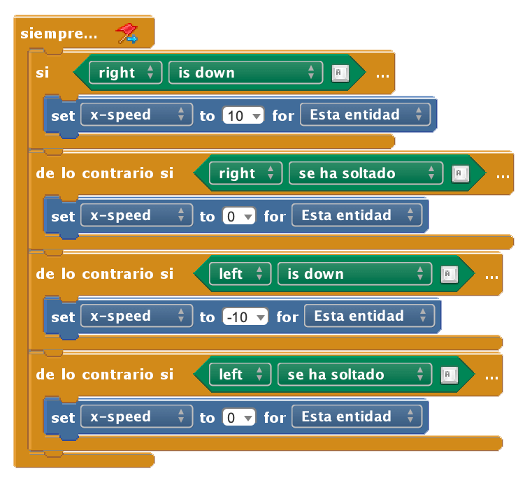
Ahora haremos las animaciones del personaje para los dos movimientos.
Los bloques de la animación están en el grupo "Entidad" y el subgrupo "Dibujo" y pondremos la instrucción
"Fijar animación".
Pondremos los nombres de las animaciones que tenemos creadas en "Apariencia".
Pondremos una para andar a la derecha, otra para andar a la izquierda y tenemos que tener en cuenta que cuando
está parado también tenemos que poner otra (una para cada dirección), si no, no pararían las animaciones de
andar.
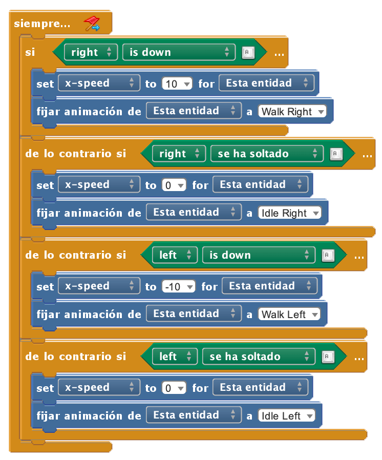
Ahora vamos a hacer que Noni salte con la flecha arriba.
Para que pueda saltar tendrá que estar tocando el Suelo, para que no pueda estar saltando dentro de un salto.
Para ello crearemos un Atributo del Juego (variable global) a la que llamaremos "TocandoSuelo". Los atributos
del juego los crearemos desde la opción "Settings" del menú superior y la opción "Atributos" de la parte
derecha. También podemos crearlo desde la propia pantalla de "Events", en el grupo de "Atributos del juego" y
dándole a "Crear nuevo atributo del juego", pero para que aparezca dentro de los Atributos del juego creados,
hay que cerrar la entidad y volver a abrirla.
Damos al botón de "Crear nuevo atributo del juego" y creamos la variable. Será de tipo boolean
(verdadero/falso) y le damos el valor inicial "Verdadero" ya que cuando empezamos, Noni está tocando el
suelo.
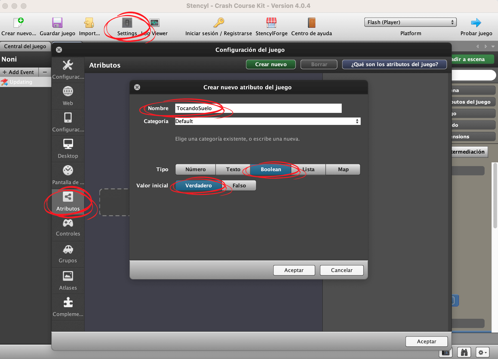
Para poder usar esta variable tendremos que saber si está colisionando con el suelo. Para ello, tenemos que
definir bien los Grupos de colisión. Estos grupos de colisión podemos definirlos en la opción del menú
superior "Settings" y en la parte izquierda "Grupos".
Noni pertenece al grupo de colisión "Players" (lo vemos en sus propiedades) y tiene que colisionar con
"Tiles". Está correcto.
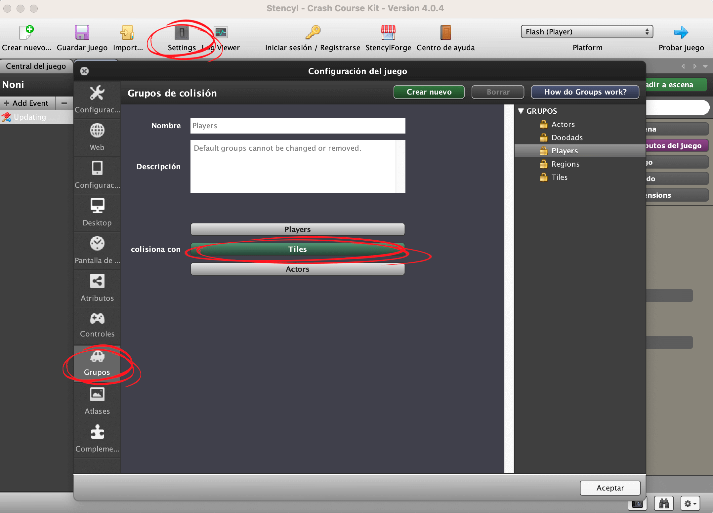
Para controlar que solo pueda saltar si estamos tocando el suelo crearemos un evento de colisión, de tipo "Member of Group".
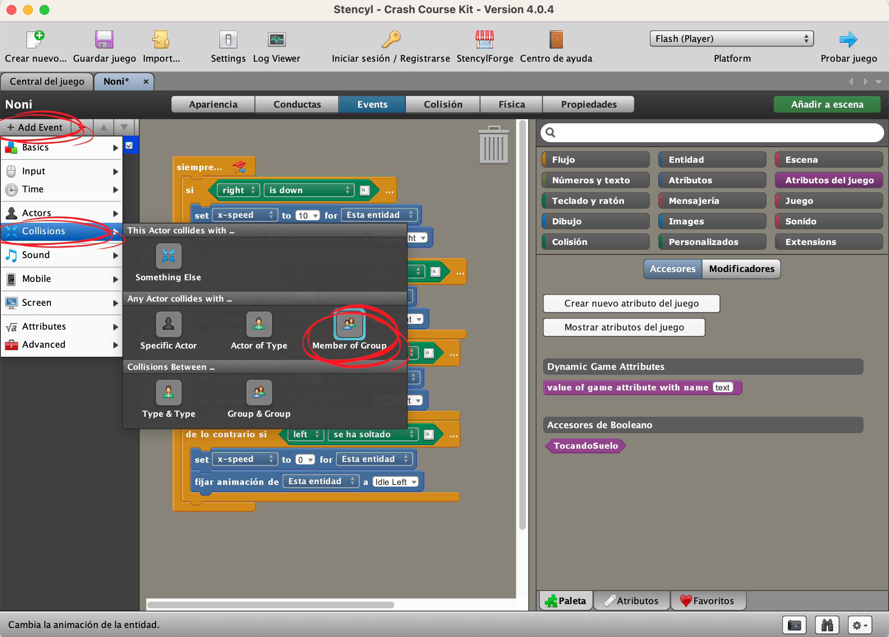
Aquí programaremos que cuando Noni esté colisionando con el grupo "Tiles" al que pertenece el suelo, podamos
poner la variable "TocandoSuelo" a "Verdadero".
Para darle un valor a un atributo del juego, iremos al grupo "Atributos del juego" y al subgrupo
"Modificadores". Seleccionaremos "Fijar..." y seleccionaremos "Verdadero", que está en "Comparación".
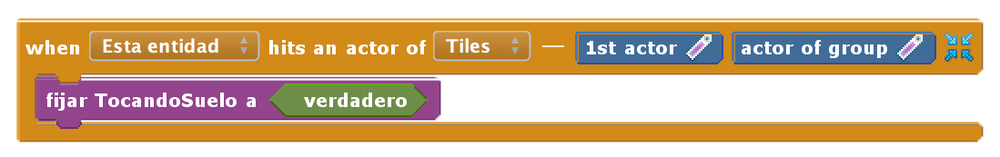
Añadiremos ahora al evento "Updating" que cuando pulsemos la flecha arriba, salte solo si está tocando el
suelo.
Para saltar, pondremos la variable "TocandoSuelo" a "Falso", ya que no queremos que salte cuando ya esté
saltando, y le moveremos en el eje "Y" "-25". La gravedad hará el resto.
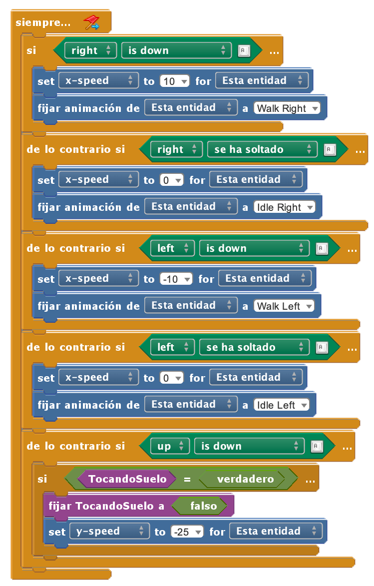
Para poner la animación del salto, primero tenemos que saber hacia qué lado está mirando. Para ello crearemos un nuevo atributo del juego (a partir de ahora lo llamaremos variable global) al que llamaremos "Direccion" y será de tipo "Texto" y con un valor inicial "D" porque cuando empieza el juego vamos hacia la derecha.
En los nombres de las variables no incluiremos símbolos ni tildes, ya que pueden dar error
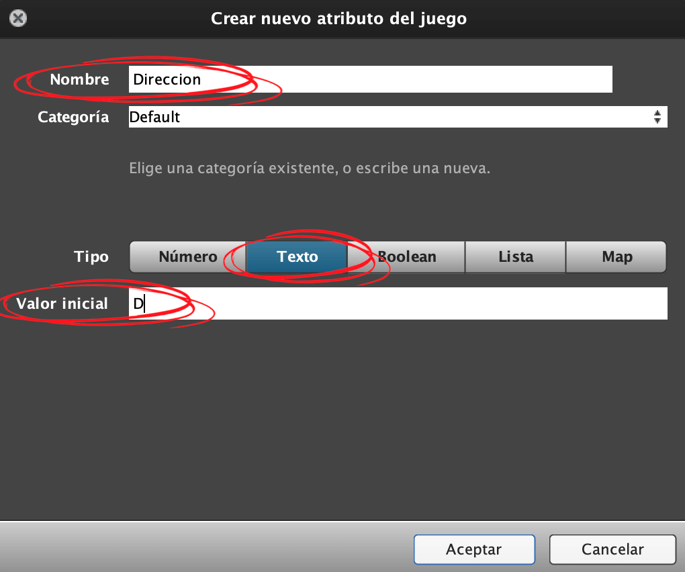
Le daremos valor a esta variable en el evento "Updating". Si pulsamos la tecla derecha le daremos el valor "D"
y si pulsamos la tecla izquierda le daremos el valor "I".
Ahora, cuando hacemos el salto, controlaremos el valor de la variable para poner la animación del salto a la
derecha o el salto a la izquierda.
Aprovechamos para añadir también un sonido en el salto. Para ello iremos al grupo "Sonido" y elegimos
"Reproducir..."
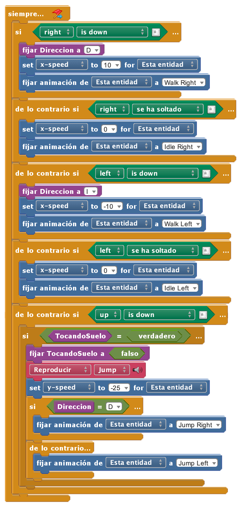
Vamos a hacer ahora algunos efectos con Noni. Estos efectos los haremos dentro de un nuevo evento de "Input" y de tipo "Keyboard".
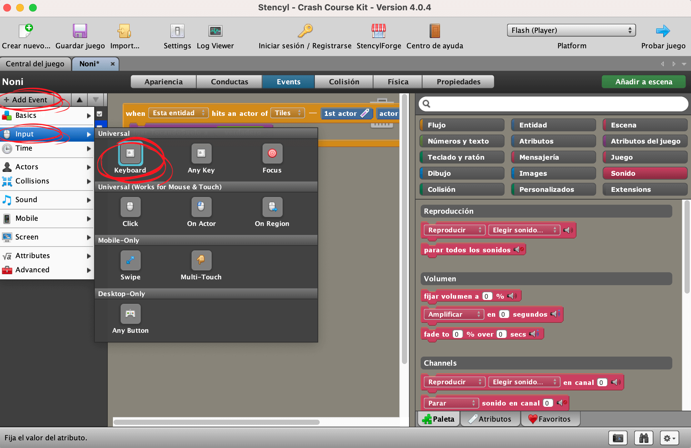
Con la tecla "P" haremos un efecto de color. Para ello, utilizaremos la tecla "P" que tenemos que tenerla
previamente definida como control (como hemos comentado antes). Si no la tenemos, la creamos.
Utilizaremos "Aplicar efecto..." del grupo "Entidad" y del subgrupo "Efectos". Le pondremos "Teñir usando" y
le añadimos el color que más nos guste, y 100 al porcentaje para que lo cambie por completo.
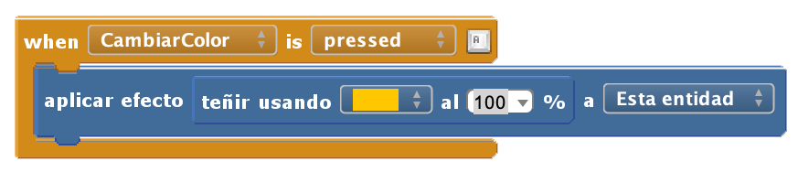
Con la tecla "O", desactivamos todos los efectos. Como vamos a utilizar otra tecla, creamos otro evento
"Keyboard".
Utilizaremos "Quitar todos los efectos..." del grupo "Entidad" y del subgrupo "Efectos".
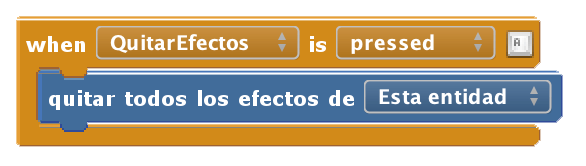
Con la tecla "I", cambiaremos la opacidad de Noni, para hacerlo transparente.
Utilizaremos "Set opacity..." del grupo "Entidad" y del subgrupo "Dibujo" y como opacidad le pondremos un 10%
menos cada vez.
También tendremos que añadir al evento "Keyboard" donde quitamos los efectos, que quite la opacidad. Para ello
tendremos que poner la opacidad al 100%.
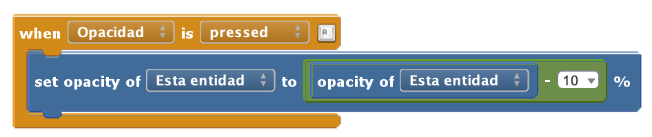

Para diferenciar cada evento "Keyboard", le vamos a cambiar el nombre a cada evento para poder identificarlos más rápidamente.
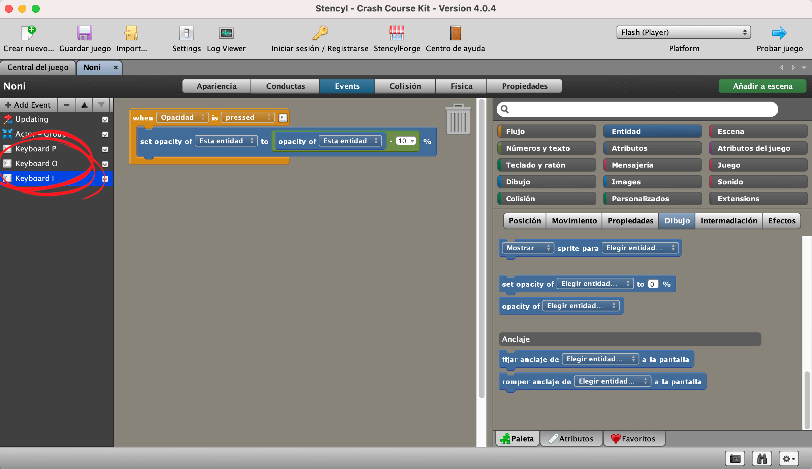
A continuación, haremos que Noni dispare una bala. Vamos a crearla.
Creamos la imagen de una bala o la descargamos. En la "Central del juego", Nos vamos a "Entidades" y le damos
a "Crear una entidad", le damos el nombre "Bala" y la creamos.
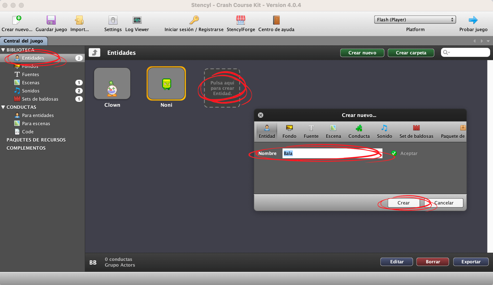
Pulsamos en añadir una animación y le añadimos el fotograma de la imagen de la bala desde "Elegir imagen" y pulsamos "Aceptar". Le damos el nombre "Derecha" a la animación, que nos indicará la orientación de la bala.
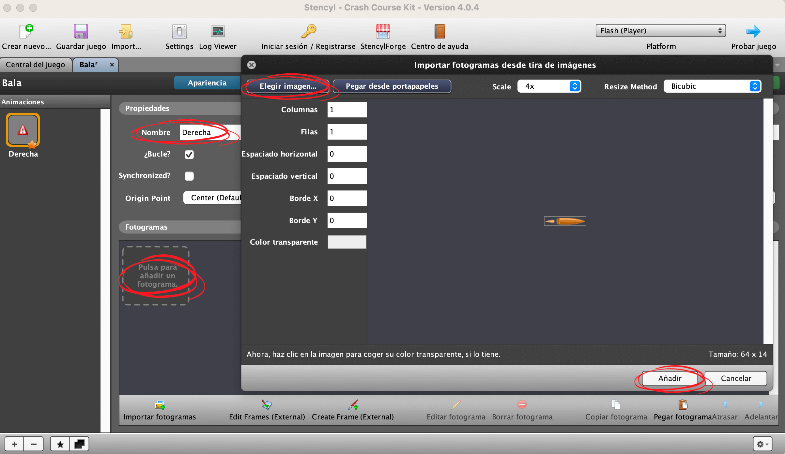
Repetimos la operación para añadir otra animación a la izquierda.
Ya tenemos nuestra entidad "Bala".
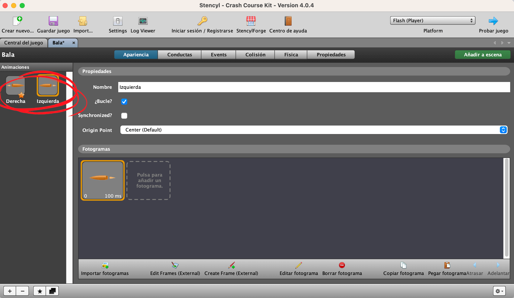
Toca hacer el disparo cuando pulsemos la tecla "Espacio".
Nos vamos a Noni y añadimos otro evento "Keyboard". Lo que haremos en este evento será que cuando pulsemos el
espacio, crearemos la bala dependiendo de la variable que tenemos de dirección.
Si vamos hacia la derecha, la creamos a la derecha y si vamos hacia la izquierda, la creamos hacia la
izquierda de Noni.
Para crear la entidad en el escenario, utilizamos del grupo "Escena" y del subgrupo "Entidades" la
instrucción "Crear...", donde pondremos la bala como entidad a crear y para la posición, la "X" dependerá de
si la creamos a la derecha o a la izquierda, y lo pondremos como la posición de "centro-x" más 10 posiciones
(en nuestro caso) si va a la derecha o la posición de "centro-x" menos 40 posiciones (en nuestro caso) si va a
la izquierda.
Por último, le indicaremos que las creamos en el "Fondo".
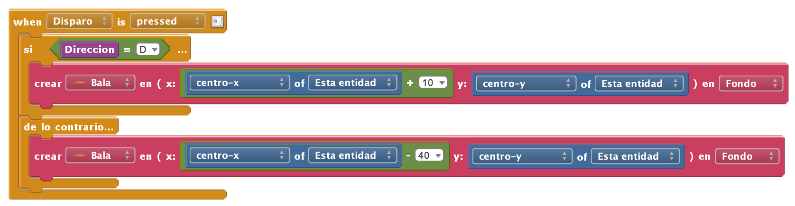
Además, para cambiar la animación si vamos a la izquierda, nos vamos a la bala y en el evento "Basics" de tipo "When creating", añadiremos que, si va hacia la izquierda, le ponga la animación "Izquierda".
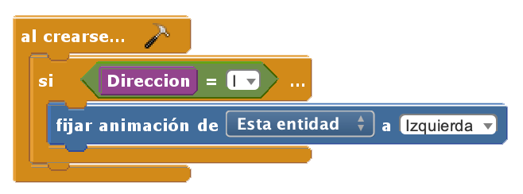
Si probamos, vemos que, al pulsar el espacio tanto a la derecha como a la izquierda, se crea la bala. Nos
faltaría moverla.
Volvemos al evento "Keyboard" de Noni y programaremos después de crear la bala que reproduzca el sonido del
disparo.
Previamente, crearemos este nuevo sonido. Nos vamos la "Central del juego" y pinchamos en "Sonidos".
Creamos un nuevo sonido al que llamaremos "Disparo" y le damos a "Crear".
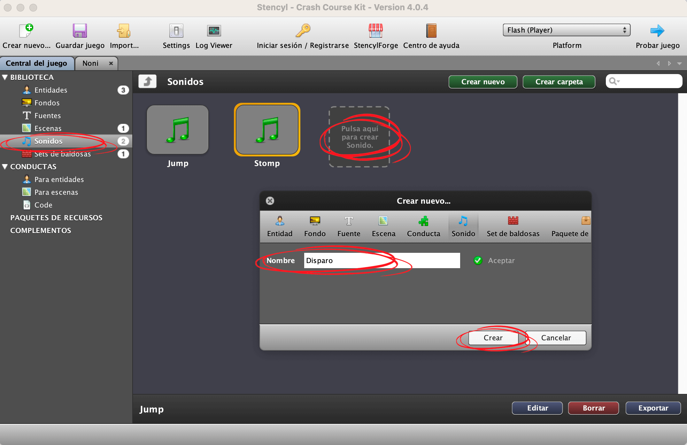
En la siguiente pantalla, importamos un sonido que previamente nos hayamos descargado con el sonido del disparo. Tiene que ser en formato .MP3 o .OGG., dependiendo del dispositivo donde lo vayamos a ejecutar.
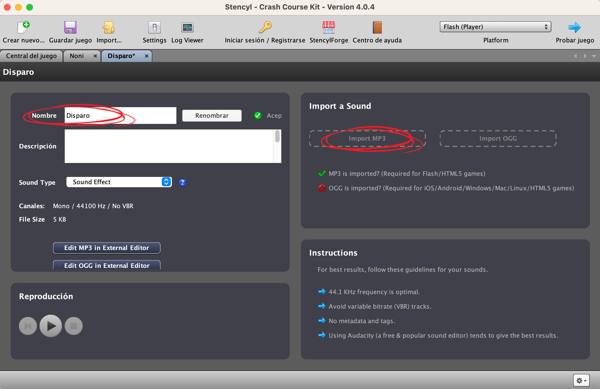
Y así tendremos nuestro nuevo sonido.
Volvemos a los eventos de Noni y le añadimos después de crear la bala, que haga el sonido del disparo.
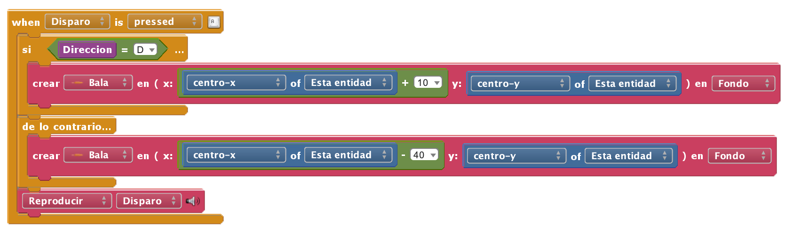
Ahora nos vamos a la bala y en el evento "Created" que tenemos, añadimos que, si la dirección es izquierda, nos movemos a la izquierda y viceversa.
Para que la bala no se vaya frenando por el efecto de la gravedad, se la quitamos en la pantalla de "Física", indicando que no se ve afectada por la gravedad.
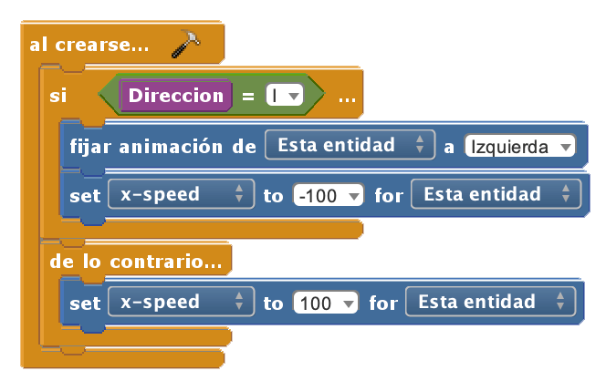
Vamos a hacer que, si Noni toca al Clown por los laterales, a Noni se le quita una de las tres vidas que le
vamos a poner. Pero si Noni pisa al Clown por encima, el Clown es eliminado y sumamos un punto en el
marcador que también crearemos.
Además, el Clown se moverá de derecha a izquierda continuamente cambiando de dirección cuando llegue al final
de la pantalla.
Lo primero que vamos a hacer es crear una animación del Clown para cuando vaya andando hacia la derecha, ya
que solo tiene la de la izquierda.
Lo vamos a hacer de una forma muy sencilla. Lo primero que haremos será renombrar la animación que ya tenemos
como "Izquierda".
Después, teniendo esta seleccionada, iremos a la opción "Edición" y "Duplicar Animación" del menú principal
para duplicarla.
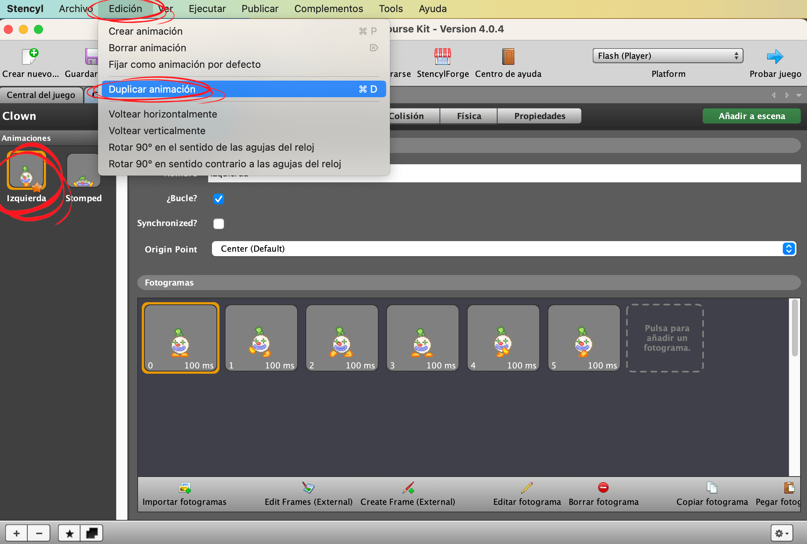
Le cambiamos el nombre a "Derecha" a esta nueva animación y le damos a la opción "Edición" y "Voltear
Horizontalmente" del menú principal para darle la vuelta.
Y ya tenemos la otra animación.
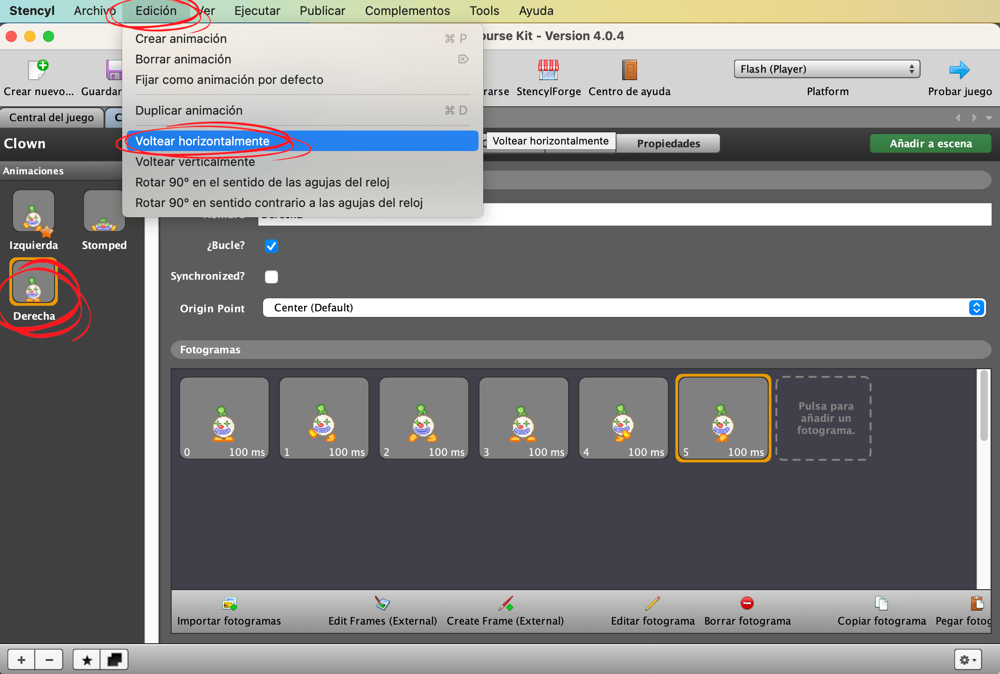
Para que el Clown ande de derecha a izquierda, lo primero que haremos será un "Atributo" (a partir de ahora lo llamaremos variable local) que llamaremos "DireccionClown" para guardar su dirección.
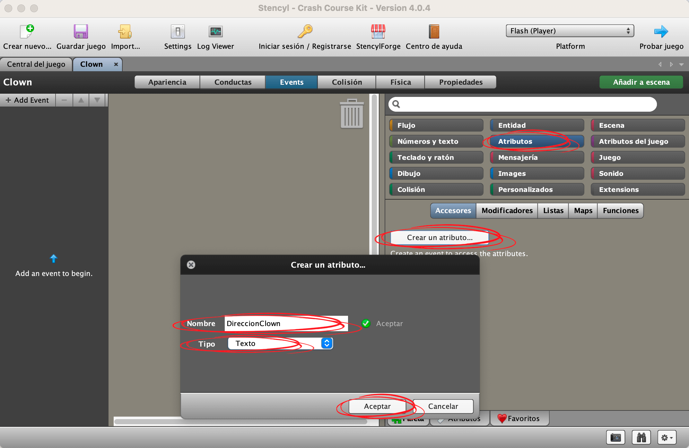
Le daremos el valor inicial "I" ya que al crearlos están mirando hacia la izquierda.
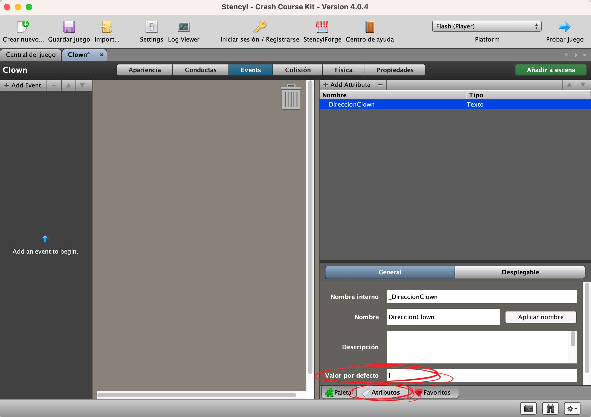
Y lo cambiaremos a "D" o a "I" cuando llegue a cada extremo de la pantalla. Esto lo haremos en un evento "Updating".
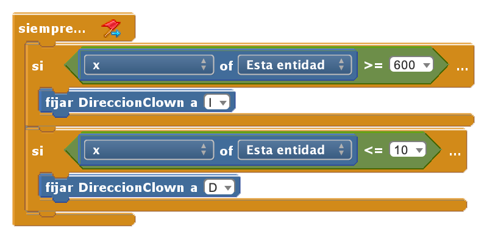
En otro evento "Updating" programaremos el movimiento. lo moveremos a la derecha o izquierda dependiendo de la variable "DireccionClown". Además, le pondremos la animación también dependiendo de esta variable.
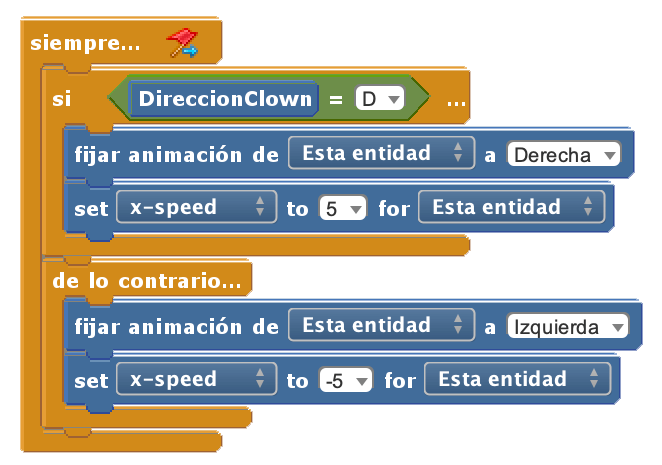
Para evitar que tanto Noni como Clown se giren por cualquier motivo, les pondremos en su "Física" que no puedan rotar. Lo haremos en las dos entidades.
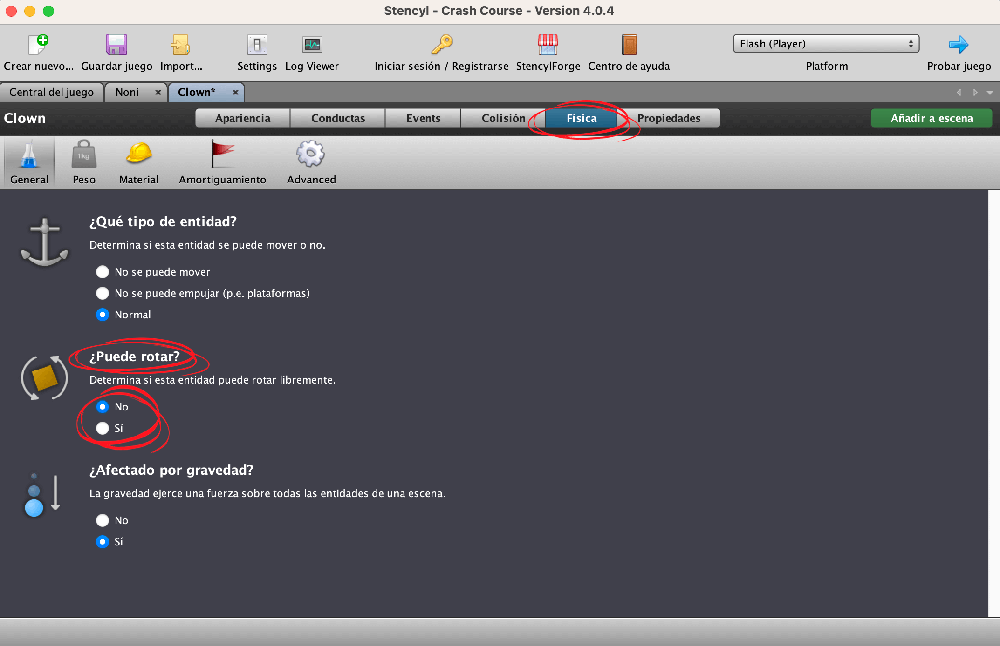
Ya que tenemos a los Clown en marcha, vamos a hacer que Noni sea capaz de matar al Clown pisándolo por encima.
Lo primero que haremos será crear una nueva variable global para guardar los enemigos que vamos matando. La
llamaremos "Enemigos" y será de tipo "Número" y con valor inicial "0".
También crearemos otra variable que nos indicará que hemos pisado al Clown, ya que cuando lo tocamos por
encima, seguirá tocándolo infinitas veces hasta que no lo eliminemos. Esta variable la utilizaremos para saber
cuando lo hemos pisado una única vez.
Posteriormente, en el mismo Clown, crearemos un evento de colisión de tipo "Member of group" donde
programaremos la colisión.
En el caso en el que la colisión sea por arriba (lo controlaremos con la instrucción "el lado superior fue
golpeado" del grupo "Colisión" y subgrupo "Básico"), reproduciremos el sonido "Stomp" para indicar que
aplastamos al Clown, sumamos uno a los enemigos que he matado, le ponemos la animación de aplastado al Clown y
destruimos el Clown con la instrucción "Destruir esta entidad" del grupo "Entidad y subgrupo "Propiedades".
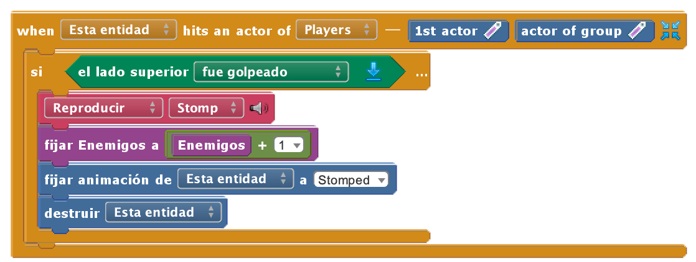
Para ver de momento que realmente está contando los enemigos que matamos, vamos a activar el archivo de Log.
Mostramos la pantalla de Log desde el menú superior y la opción "Log Viewer".
Para escribir en el Log, utilizamos la instrucción "Imprimir" y lo que vamos a mostrar es la variable
"Enemigos". Cuando no recordamos donde está una instrucción, podemos buscarla en el buscador, sobre los grupos.
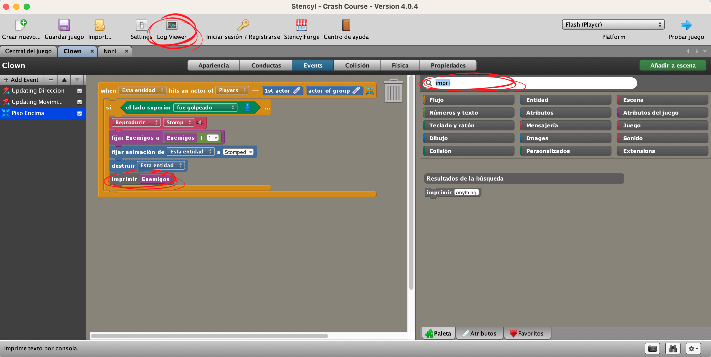
Ahora cuando ejecutemos el juego y aplastemos a los tres Clowns, veremos en el Log si nos funciona correctamente o no.
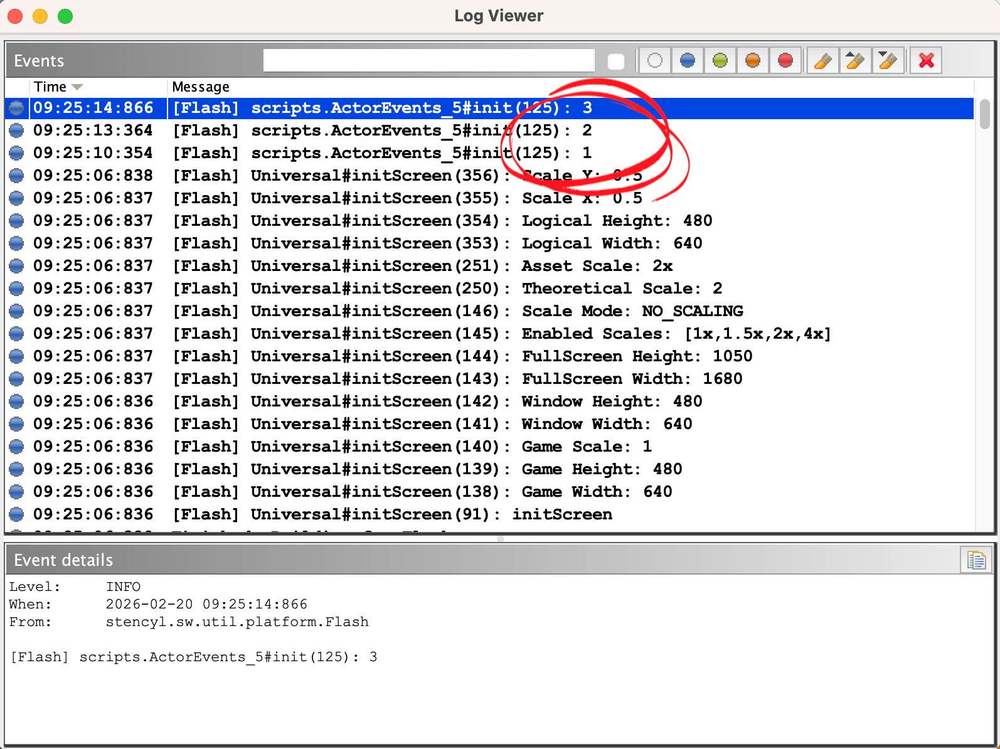
En este caso funciona correcto, pero no se ve la animación de aplastado.
Para ver esa animación, pondremos que lo destruya tras 1 segundo, con la instrucción "Hacer tras..." del grupo
"Flujo" y subgrupo "Tiempo".
Si lo hacemos así, mientras espera a que se vea la animación, ejecutará varias veces la colisión, cosa que no
nos interesa.
Para solucionarlo, crearemos la variable local "PayasoAplastado" de tipo "Booleana" para que solo lo haga una
vez. Inicialmente tendrá el valor "Falso" y controlaremos que cuando colisione por la parte de arriba del Clown,
si la variable es falsa que haga lo necesario para eliminar el Clown, poniéndola a "Verdadero" lo primero,
haciendo lo que estábamos haciendo y finalmente, tras destruir el Clown, la volvemos a poner a "Falso" para el
siguiente Clown.
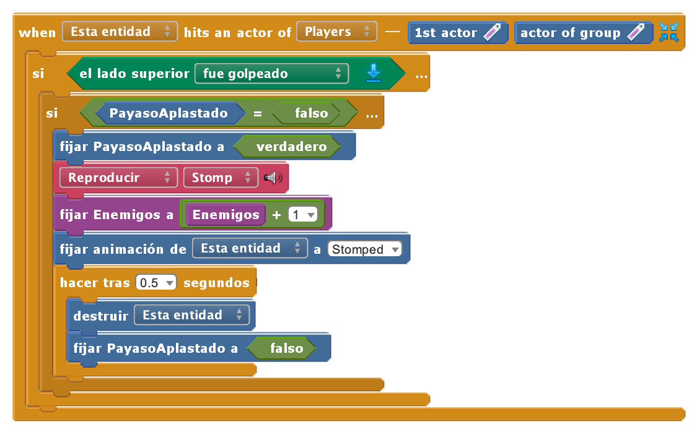
Ahora tampoco vemos que ponga la animación de aplastado, pero si lo está haciendo. Lo que pasa es que está poniendo también las animaciones de andar. Lo que haremos será que solo haga las animaciones de andar cuando no se esté aplastando, es decir, cuando "PayasoAplastado" sea "Falso".
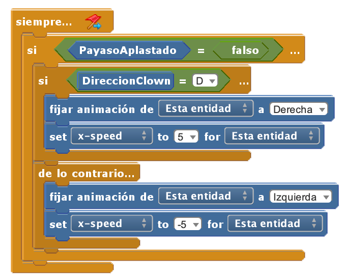
Vamos a programar que cuando toquemos al Clown por los lados, nos quite una vida. Para ello, crearemos una
variable global a la que llamaremos "Vidas", que será "numérica" y tendrá el valor inicial "3".
Vamos a programar a Noni. Crearemos otro evento de colisión "Actor of Type". En él, programaremos que si
golpeamos al Clown por la derecha o por la izquierda, le quitamos una vida, hacemos un sonido y ponemos a Noni
en una posición elevada para darle margen y que no le pille otra vez el Clown, por ejemplo en la posición
50-100.
Ahora que ya tenemos el Clown y las balas funcionando, vamos a hacer que, si una bala toca a un Clown, lo elimine.
Cuando tengamos que programar algún evento de colisión tenemos que revisar siempre el grupo de colisión al que pertenece la entidad, los grupos con los que colisiona dicho grupo y los límites de la colisión de cada una de las animaciones.
Creamos un evento de colisión (puede ser "Member of Group", "Actor of type", o como nos venga mejor), y hacemos que cuando la bala golpee al Clown, le sumamos "1" a "Enemigos" y eliminamos tanto la bala como el Clown.
En los eventos que tienen parámetros, como estos de colisión, el primer parámetro corresponde con el primero que le digamos en la condición y el segundo con el segundo. Podemos utilizarlos dentro del código.
Vamos a crear otro par de escenarios. Uno donde pongamos "Game Over" para que aparezca cuando acabemos con
todos los enemigos y otro donde pongamos "You Lose" para que aparezca cuando nos hayan quitado todas las
vidas.
Empezaremos con el "Game Over". Vamos a buscar una imagen que nos guste para esta escena en formato .jpg y con
el tamaño 640px por 480px.
Una vez creada la imagen, nos vamos la "Central de juego" y pulsamos en "Fondos". Creamos uno nuevo y le damos el nombre "GameOver".
Ahora le añadimos un fotograma al fondo. Primero ponemos la escala a 1x, ya que nuestra imagen ya tiene el tamaño del fondo (640x480 pixeles). A continuación, pulsamos en elegir imagen, buscamos el fondo que hemos elegido y pulsamos añadir.
Ahora nos vamos a las "Escenas" y creamos una nueva. Le damos el nombre "Game Over" y pulsamos "Crear".
Iríamos a la parte inferior, a la zona de las capas y crearíamos una nueva capa de tipo "New Background Layer" y seleccionamos el fondo "GameOver".
Ya tendríamos la escena creada. Lo mismo hacemos con la escena con el mensaje "You Lose".
Ahora haremos que aparezca la escena "Game Over" cuando acabemos con los tres Clowns.
En nuestro caso, le sumamos a la variable "Enemigos" en dos sitios distintos, en el Clown cuando le aplastamos
y en la bala cuando los elimina.
Podemos programar las dos entidades o programar la escena. Nosotros programaremos la escena.
Añadiremos un evento "When Updating" en el que pondremos que si el número de enemigos ha llegado a 3,
cambiaremos a la escena "Game "Over". Seleccionaremos del grupo "Escena" y subgrupo "Cambios" la instrucción
"Switch to...", donde le indicaremos que cambia a la escena "Game Over" con un efecto y en un tiempo.
El juego con esta escena quedaría de la siguiente forma.
Vamos a hacer ahora lo mismo para que cuando nos quiten las tres vidas, aparezca la escena "You Lose".
El juego con esta escena quedaría de la siguiente forma.
Vamos a hacer una serie de retos adicionales.
El primero será que al aplastar Noni al Clown, Noni pegue un pequeño salto, del estilo Mario Bros.
Modificaremos el evento de colisión del Clown de cuando lo aplasta Noni.
Como la gravedad nos va a impedir que el Clown empuje a Noni fácilmente, desactivamos la gravedad, empujamos
a Noni y volvemos a activar la gravedad. La dirección en la que tenemos que empujar a Noni es 270 (hacia
arriba)
Pondremos una plataforma y un Clown que se mueva de un lado a otro de la misma.
Modificamos la escena para añadir la plataforma a una altura a la que Noni pueda llegar con un salto. También
podemos ponerla a la altura que queramos y modificar el salto de Noni (será lo que haremos nosotros).
Vamos a añadir a las tiles de inicio y final de la plataforma una marca para saber que son los tiles finales
de la plataforma para que el Clown se dé la vuelta en ellos.
Para ello, accedemos a la "Central del juego" y vamos al "Set de baldosas". Seleccionamos la baldosa del
inicio de la plataforma y le añadimos en el campo data, por ejemplo, "FinPlataforma". Lo mismo hacemos con
la baldosa de fin de la plataforma.
En la escena, pondremos un Clown en la plataforma, pero en las tiles que no estén al principio ni al final (Tiles con el texto "FinPlataforma" en "Data").
Crearemos en el Clown un nuevo evento de "Collision" de tipo "Member of Group".
Programamos la colisión del Clown con las Tiles. Para saber si hemos colisionado, preguntaremos por el texto
que hemos puesto en el campo "data" en cada punto de colisión.
Para gestionar la colisión y poder ver si en algún punto tocamos las tiles de principio o fin, utilizamos el
bloque de tipo bucle "para cada punto de colisión" dentro del evento de colisión.
Para ver el valor del campo "data", utilizaremos dentro de este bucle el bloque "data for collided tile", que
nos dará ese texto.
Después preguntaremos si la velocidad es positiva o negativa para ver su dirección y la cambiamos.
No olvidemos revisar siempre los grupos de colisión.
Cómo saber cuántos enemigos tenemos en la escena sin tener que poner un número de enemigos fijo para saber
cuando hemos terminado el juego.
Para ello, crearemos una nueva variable global que contendrá el número de enemigos totales. La llamaremos
"NumeroEnemigos".
Ahora iremos a la escena y crearemos un nuevo evento "Basics" de tipo "When Creating". En él, programaremos
que por cada miembro que creemos del grupo de los Clown ("Actors") añada uno a la variable "NumeroEnemigos".
Utilizaremos el bloque de tipo "Escena" y subtipo "Entidades", llamado "Para cada miembro...". Es un bucle,
donde seleccionaremos el grupo "Actors", y dentro de este, iremos acumulando la variable.
Iremos al evento donde mostramos la escena de "Game Over", y en lugar de controlar que cuando los enemigos eliminados sean "4", lo haremos cuando los enemigos eliminados sean igual que la variable "NumeroEnemigos".
Vamos a mostrar las vidas y los enemigos eliminados en pantalla.
Para esto, añadiremos a la escena un nuevo evento "Basics" de tipo "When Drawing".
Añadiremos la instrucción "Dibujar texto..." que está en el grupo "Dibujo" y subgrupo "Dibujos". En esta
instrucción mostraremos el texto "Vidas: 3" y lo haremos concatenando el texto "Vidas: " con la variable
"Vidas".
La concatenación de textos la hacemos con el bloque de suma.
Le daremos una posición "X" e "Y" para mostrarlo en la parte superior izquierda.
Lo mismo haremos con los enemigos que hemos eliminado y lo colocaremos en la parte superior derecha.
El juego con los retos quedaría de la siguiente forma.

Para descargarte el juego terminado, pulsa aquí.
Para descargarte el juego terminado con los retos, pulsa aquí.